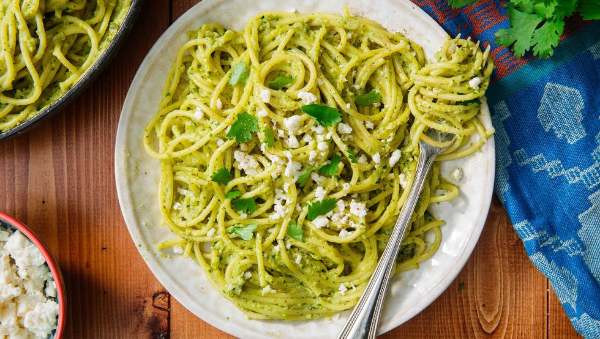

Green Spaghetti

Not a big fan of spice? Feel free to reduce the amount of poblanos to 2 or 3,
supplementing with roasted green bell pepper instead if you like!
Ingredients
- 4 large poblano peppers
- 1/4 c. packed cilantro leaves, plus more for garnish
- 1 small yellow onion, chopped
- 2 cloves garlic, chopped
- 2 tbsp. butter
- 1/4 c. low-sodium vegetable stock or water
- 1 lb. spaghetti
- 4 oz. cream cheese, cubed
- Kosher salt
- Freshly ground black pepper
Directions
- Turn broiler to high and line a medium baking sheet with foil. Place peppers on baking sheet and broil,
turning occasionally with tongs, until blackened on all sides. Transfer chilis to a heat-proof bowl and
cover with plastic wrap. Let peppers steam for 10 minutes, then remove plastic wrap and peel skins off peppers.
Remove stems and seeds and roughly chop peppers.
- Combine peppers, cilantro, onion, and garlic into a food processor or blender and blend until smooth.
- In a large skillet over medium heat, melt butter. Pour in pepper mixture, then stir in vegetable stock or water.
Cook, stirring occasionally, until thickened slightly, 3 to 4 minutes.
- Meanwhile, make spaghetti: In a large pot of boiling salted water, cook spaghetti according to package instructions.
Reserve 1 cup pasta water then drain.
- Add cream cheese to sauce and stir until it has completely melted into the sauce. Season with salt and pepper.
Toss cooked pasta with sauce, adding pasta water to loosen up the sauce, if needed.
Divide onto plates and garnish with cilantro and queso fresco.